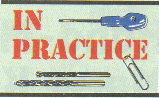

|
L. B. Cebik, W4RNL (SK) Knoxville, TN |
|
L. B. Cebik, W4RNL (SK) Knoxville, TN |
 Links to Some Other Notable Antenna Sites
Links to Some Other Notable Antenna Sites
These links carry a lot of valuable information and ideas, ranging from antenna fundamentals to advanced topics in antenna design, modeling, feeding, and building. In addition, some provide links to other sites, including manufacturers and dealers. Because URLs change without notification to those linking to them, not all of these links may work at any given time. I shall update links as soon as I receive the appropriate information.
(web.archive.org) For those interested in antenna experimentation, the magazine AntenneX is now an on-line monthly subscription publication. It appeals to both new and experienced antenna experimenters and builders.
Cemtach (web.archive.org - no images captured) has obtained a very large collection (over 500) models and provided information and patterns at their web site. The information may be useful to those wishing an overview of the patterns produced by various types of antennas. In addition, the simulations make extensive use of color in their pattern images, which the browser can download in .PNG format
Rudy Severns, N6LF, has a site set up in blog style with a considerable number of papers and presentations on antennas and related antenna system elements. The articles contain the results of Rudy's extensive research conducted in a professional manner, but with results especially useful to radio amateurs. The site also contains a comparison of VNA-type instruments that are supplanting simpler type SWR meters to provide more complete analyses of antenna systems
David Robbins, K1TTT, has developed a most useful collection of technical notes that include important items on antenna and related antenna system elements. These notes include his own analyses as well as hard-to-find items drawn from internet sources. (The partial photo is just the tip of one tree in his antenna farm.) Among other items, you will find W3LPL's long Yagi designs (until Frank establishes his own web site).
Tom Rauch, W8JI, provides a multi-faceted site with a strong component devoted to antenna topics, including adjunct devices and measurements. Low-band activity, techniques, and technology is one of his specialties. The site is also one of the best sources of detailed information on the popular MFJ-259 anatenna analyzer.
George Fremins, III, K5TR, maintains a selection of pages describing his own developing antenna farm and as well has a fairly nice collection of Yagi models--including the W3LPL designs and some Hy-Gain and Cushcraft models--in YO form for use with this popular Yagi optimizing program.
David Jefferies, (web.archive.org) has placed on line a large number of very useful papers on fundamental aspects of antennas, ranging from Maxwell's Laws to Yagi-Uda antennas to transmission lines to radiation impedance to the basics of arrays. . .. This is just a sampling of the topics covered. The items appear aimed toward his E.E. students, but the papers are useful to all who wish another look at some of the basics ideas behind antennas.
 Ian White, G3SEK, maintains an excellent "Technical Notebook" site. Information focuses on VHF/UHF and contains important antenna, filter, moonbounce, and circuitry data. The information on Yagi stacking and construction is especially interesting to me, but you may find his other notes to be just what you need. Ian writes the highly respected monthly RadCom "In Practice" column.
R. J. (Reg) Edwards (web.archive.org) maintains a site with free calculation software of considerable interest and utility to radio amateurs. With about 100 utility programs (with some of the Pascal coding also available), the site covers many calculations needed for antennas, transmission lines, loading coils, and other related topics. All programs are open--that is not zipped--and are ready for use upon downloading.
 John Reynolds, G3PTO, provides another fine British antenna web site. Actually, antennas are only one portion (but an important portion) of John's collection of useful information for QRPers and other operators.
John Reynolds, G3PTO, provides another fine British antenna web site. Actually, antennas are only one portion (but an important portion) of John's collection of useful information for QRPers and other operators.
Dan Maguire, AC6LA, provides amateurs and others interested in system feeding and Smith Charts with an interesting program (XLZIZL) and explanations of how it works. The program can be downloaded from Dan's site. The site also contains some very useful information on Smith charts and their alternatives, as well as some interactive features for those who access the pages.
 Kevin Schmidt, W9CF, has placed at his site a consider number of papers on tuners, baluns, networks, antennas, and related topics, along with some interesting and instructive applets for users to download. The material is advanced, with a strong mathematical element throughout.
Kevin Schmidt, W9CF, has placed at his site a consider number of papers on tuners, baluns, networks, antennas, and related topics, along with some interesting and instructive applets for users to download. The material is advanced, with a strong mathematical element throughout.
Roger Cox, WB0DGF / W8IO, author of LPCAD and a veteran antenna engineer and designer, provides considerable information on and links to sites devoted top both antenna modeling and stealth antennas.
Aaron Schmitz, KB0YKI, maintains several pages of good basic construction information on some useful antennas for VHF/FM work.
Phil Karras, KE3FL, maintains a diverse set of web pages which include some very useful, downloadable software on power output, SWR bandwidth, J-poles, and other subjects.
Mike Banz, AA3RL, has some interesting studies of dipoles, both vertical and and horizontal, at his site, along with the results of tests with a commercial multi-band vertical antenna. Also featured is a spreadsheet transmission line calculator that you can down load without cost.
Cecil Moore, W6RCA (W5DXP), (web.archive.org) has produceded an interesting page that focuses on techniques of matching parallel line fed antennas to station equipment, the G5RV antenna, and a variety of loop antennas.
John Tait, EI7BA gives excellent detail about the construction of his multi-band quad (exact number of bands keeps growing). Also included are details of the feed system and its rationale, along with many photos, drawings, and tables.
VK1BRH Ralph Holland, VK1BRH, shares my interest in antenna modeling. He specializes in low band short or compact vertical antennas, but his work covers a wide range of antenna simulation experiments.
Dan Warren (web.archive.org) Dan Warren, an Air Force antenna engineer, has developed (and continues to develop) one of the very best compact treatments of antenna fundamentals under the title "How to Become an Antenna Guru." Besides providing a technically sound introduction to an array of arrays (and basic antennas, too), Dan illustrates the long web entry with excellent color 3-D antenna patterns.
Prof. Natalia Georgieva (web.archive.org) of McMaster University in Ontario has made available her lectures in two subjects. The link is to her course in Modern Antennas in Wireless Telecommunications, which is an excellent survey of many antenna principles and practices. Also available from another link at her site is Theory and Applications in Electromagnetics on the fundamental principles underlying electromagnetic radiation. These courses are designed to be used with texts and lab exercises, but the lectures themselves make a very useful and compact survey of the field. They are heavy in relevant equations that are useful for reference.
The lectures themselves are in .PDF format, so an Adobe reader is necessary.
Prof. Miguel Ferrando Bataller (web.archive.org) of Universidad Politecnica de Valencia has made his university course lecture notes and other helpful aids available on his website. These notes are in Spanish and may be extremely helpful to those for whom English is not the native language. The site includes pages of equations of fundamental importance in addition to extensive notes.
The site also has some very useful links to advanced antenna tutorials, especially for those working in the area of microwave and wireless antenna technology. See, for example, the tutorials provided by IEC (broken link http://www.iec.org/online/tutorials).
The G3YCC QRP site (web.archive.org) contains a wealth of information on a large number of topics of interest to QRP operator, including a variety of articles on antenna and related system items for both home and portable use. The site is related to (but not directly sponsored by) the GQRP club, a long-standing organization of QRP operators world-wide and publisher of SPRAT, a highly respected journal of QRP techjnical information and ideas. Only the antenna index page is linked here, but you can back up to the home page for the array of other QRP topics that George has provided.
A good site for learning antenna basics and designing basic antennas.
Ken Harker (web.archive.org) is developing new ways to present visualizations of antenna patterns. Although in the early development stages, this project bears watching and may one day find its way into commercial antenna modeling software.
 Commercial Antenna Manufacturers and Vendors: A collection on known sources, offered because these pages often contain educational as well as commercial information.
Commercial Antenna Manufacturers and Vendors: A collection on known sources, offered because these pages often contain educational as well as commercial information.Other Amateur Radio Links: A collection of links to organizations and linkage sites to help you find other good sources of information.
Updated 10-02-2007.